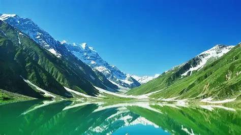
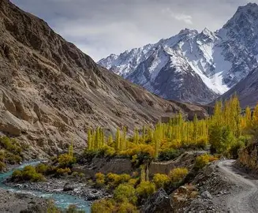
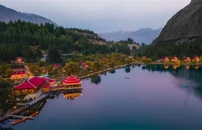
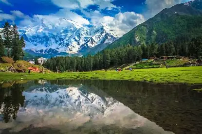

Northern Pakistan
Northern Pakistan is home to some of the world's highest mountains, including K2, the second highest peak. This region boasts stunning valleys, crystal-clear rivers, and glaciers that form the headwaters of the Indus River.
The cultural diversity is as rich as the landscapes, with various ethnic groups including the Balti, Burusho, Wakhi, and Kalash people, each with unique traditions, languages, and lifestyles.
From the ancient Silk Road to modern adventure tourism, Northern Pakistan offers unforgettable experiences for nature lovers, trekkers, and cultural enthusiasts alike.

Featured Destinations

Hunza Valley
Known for its spectacular scenery, friendly locals, and the majestic Rakaposhi mountain.
Explore More
Skardu
Gateway to the world's highest peaks and home to the stunning Shangrila Resort.
Explore More
Fairy Meadows
A lush green plateau with breathtaking views of Nanga Parbat, the "Killer Mountain".
Explore MoreTraveler Experiences
"The Hunza Valley was the most beautiful place I've ever visited. The hospitality of the locals made our trip even more special."
"Trekking to Fairy Meadows was challenging but absolutely worth it. Waking up to the view of Nanga Parbat was unforgettable."
"Skardu's landscapes are out of this world. The Shangrila Resort is truly a paradise on earth."
Popular Tours
K2 Base Camp Trek
21-day adventure to the base of the world's second highest mountain
Hunza Cultural Tour
7-day exploration of Hunza's culture, history, and landscapes
Northern Lakes Expedition
10-day journey to the stunning high-altitude lakes of Skardu